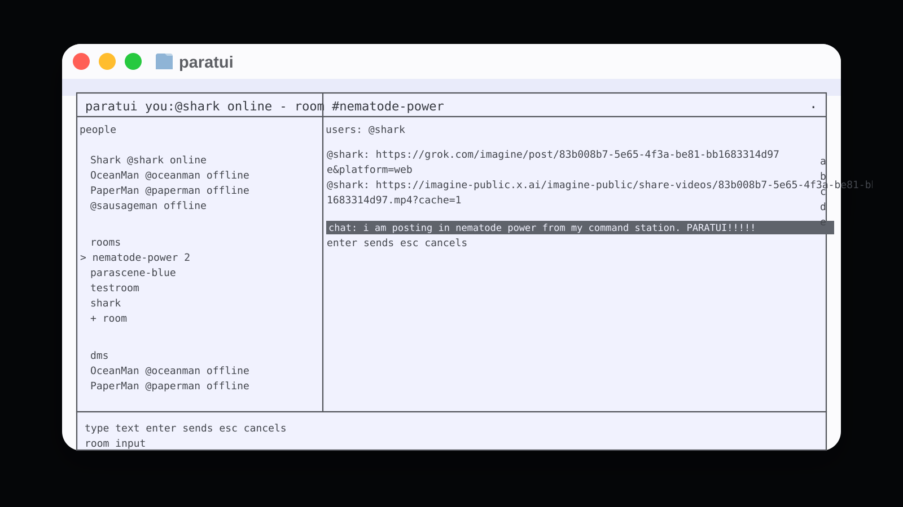

Current install
The working path right now is from GitHub.
git clone https://github.com/williamsharkey/paratui.git
cd paratui
npm install
npm run build
npm link
paratuiParascene for keyboard hackers.
Keyboard-first terminal client
`paratui` is a fast monochrome-first interface into Parascene. It is built for arrow keys, tab focus, fast room hopping, direct messaging, comment posting, image-slot workflows, and command-line automation.

Install
The working path right now is from GitHub.
git clone https://github.com/williamsharkey/paratui.git
cd paratui
npm install
npm run build
npm link
paratuigit clone https://github.com/williamsharkey/paratui.git
cd paratui
npm install
./paratuinpm install -g paratui
paratuiThe `paratui` package name is currently free on npm. Publishing still needs an npm login token.
paratui, press p, paste the psn_... key, and press enter.What it does
Arrow into public rooms, open DMs, type directly into the focused chat field, and stay on the keyboard.
ASCII previews stay warm with neighboring renders cached so left and right browsing feels immediate.
Scroll comments under a creation, move to [+ comment], type, and send.
Open a full image in the host OS, jump to the saved file or folder, and keep the terminal flow intact.
Use the same project as a CLI for prompt submission, export packing, and scripted workflows.
One canonical JSON config stores the bearer token, mute state, export path, and lightweight UI settings.
Example
paratui --api-key 'psn_...' --prompt 'orbital fungus' --title 'orbital fungus' --server mutations --method chainMoved from the old home page
`parasharkgod.com` used to lead with Parascene Forge, the AI server-builder flow for describing, reviewing, testing, and deploying image servers. That material is still part of the story, but it is no longer the main landing experience.